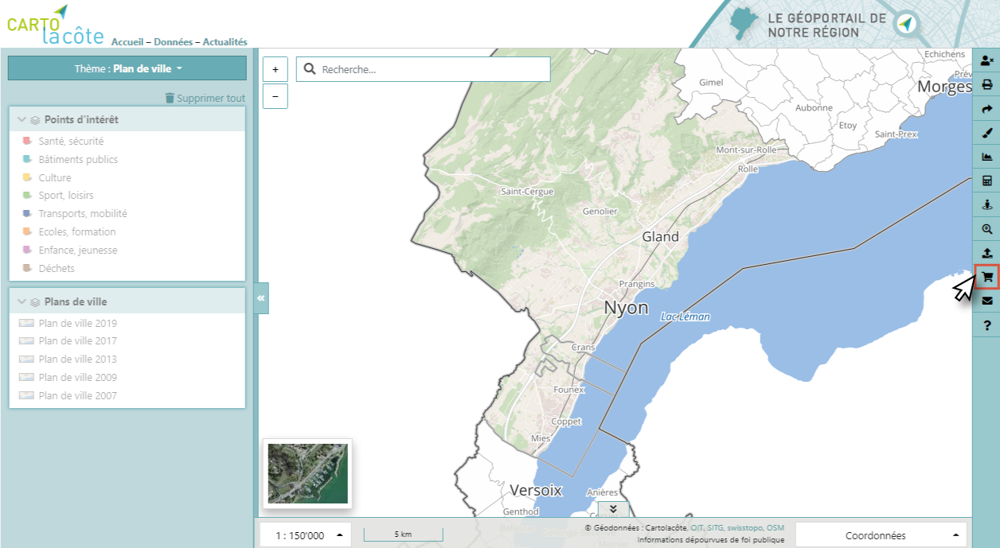

Impression et export¶
Impression¶
Il est possible de définir certaines propriétés de l’impression (format, logo, échelle, rotation, titre) et d’afficher une légende pour les couches actives.
Un rectangle montrant l’emprise de l’impression apparaît sur la carte. Ce rectangle peut être déplacé, agrandit et tourné à l’aide de la souris (ALT+SHIFT).
Lien permanent et QR code¶
Un moyen efficace de partager une carte est l’utilisation d’un lien permanent (permalien). Ce lien permet de recréer l’état de la carte, ce qui veut dire que l’emplacement est conservé, tout comme les couches affichées avec leur ordre d’affichage et même les annotations. Une autre utilisation possible du permalien est de créer un favori dans le navigateur Internet, pour avoir un affichage spécifique propre à l’utilisateur.
Il est également possible d’envoyer le permalien à une adresse email, pour cela il faut utiliser les champs du formulaire spécifique.
L’outil de partage permet aussi de conserver le permalien sous forme de QR Code.
Commande de géodonnées¶
Les données affichées dans le géoportail sont commandables en ligne via le portail de l’ASIT VD.
Pour la commande de plans réseaux, l’étendue géographique actuelle est conservée pour rendre le processus encore plus simple.
